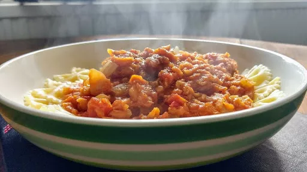

Lentil bolognaise with parmesan basil and pine nuts
50 mins
Serves 6VegetarianDairy FreeGluten Free

Make this lentil bolognaise sauce in advance and simply heat and toss through pasta for an easy, quick dinner. You could even freeze the sauce in portions.
Ingredients
1 brown onion, finely diced
2 cloves garlic, minced
2 carrots, peeled and grated
1 stalk celery stalk, finely diced
2 tbsp fresh oregano, chopped
½ cup red wine
½ cup red split lentils
¼ cup tomato paste
2x 400 g cans canned chopped tomatoes
1-2 tsp brown sugar
2 tsp balsamic vinegar
2 tsp soy sauce (gluten-free if required)
½ tsp salt
2 cups water
¼ cup sliced pitted olives
400 g pappardelle pasta (fresh or dried), gluten-free if required
½ cup pine nuts, toasted
¼ cup fresh basil leaves
¼ cup parmesan cheese, finely grated or shaved (omit for dairy-free)
Instructions
Bring a large pot of salted water to the boil.
Heat a drizzle of oil in a large fry-pan on medium heat. Cook onion, garlic, carrots, celery and oregano for 6-7 minutes, until softened. Add wine and simmer for 1 minute, until nearly all evaporated.
Stir through lentils, tomato paste, tomatoes, sugar, vinegar, soy sauce, salt and water. Bring to a simmer, reduce heat to low and simmer, covered for about 25 minutes until lentils are soft. Stir through olives and season to taste with salt and pepper. If mixture dries out at any time, stir through ¼ - ½ cups water.
While sauce is cooking, prepare salad. Toss with salad leaves and parmesan in a medium bowl. Drizzle with a little extra-virgin olive oil and balsamic vinegar just before serving.
When sauce has nearly finished cooking, cook pasta in pot of boiling water according to packet instructions, until just tender. Drain, return to pot and drizzle with a little olive oil to prevent sticking.
To serve, divide pasta between plates and spoon over lentil bolognaise sauce. Sprinkle over pine nuts, basil and parmesan. Serve salad on the side.